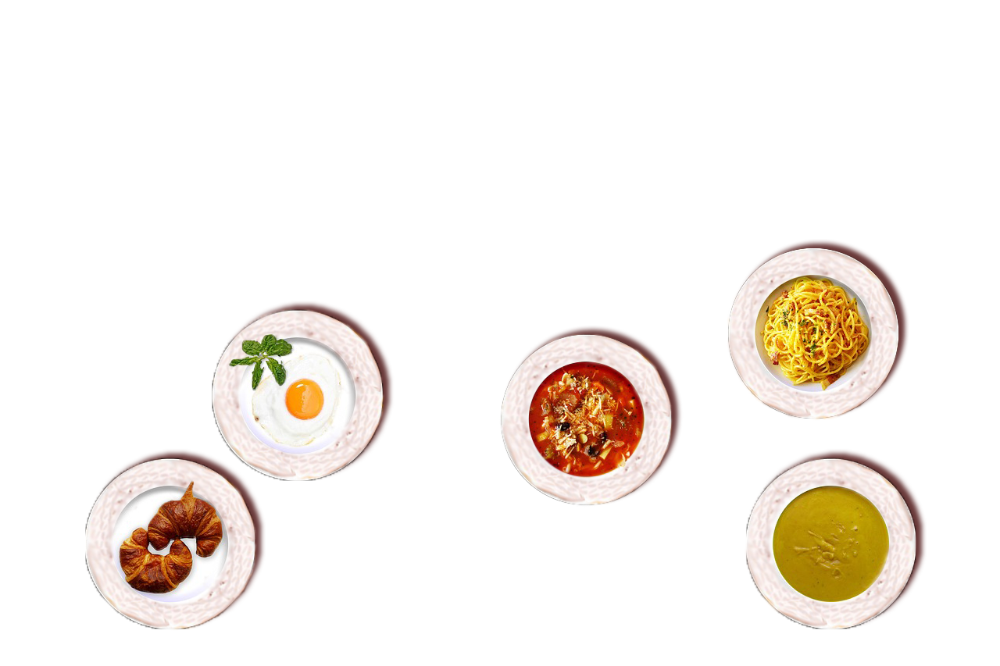
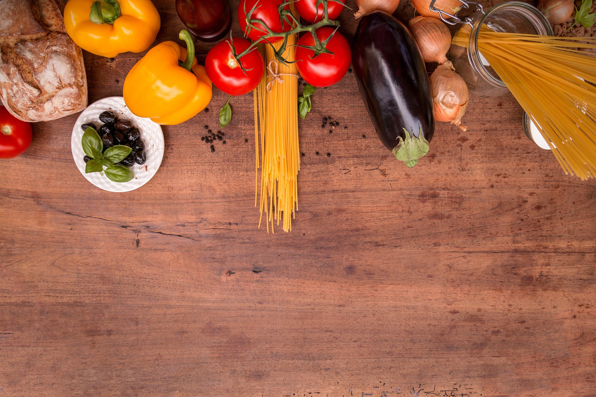
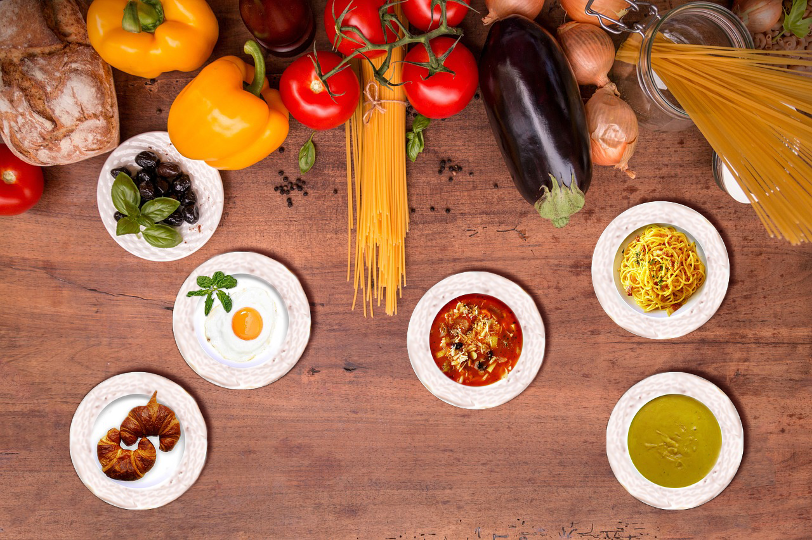

DIGITAL BILLEDE BEHANDLING OG WEBPROTOYPE
Særligt fokus på Adobe Photoshop og Figma
This small exercise aimed to teach us Photoshop skills, specifically how to merge images seamlessly to create a new composite image. "The task was straightforward: craft a morning tableau using diverse copyright-free images.
 And this is the outcome:
Before and after In this exercise we had to go out and take a picture to photoshop with a few goals and criterias to fufill:
Give the button a pres and see if you can spot all the differences!
Event for new students The prompt for this exercise was: Create a prototype for a website about an event for new students in Copenhagen. We got inspired by a recent event our own school had, which was Tivoli themed. So, that set the stage for our event, and now it's off to the races, trying to figure out Figma for the first time!
gruppe: Bianca,Oliver og Jessica
VISUELT KONCEPT TIL DIGITALE OG PRINTEDE MEDIER
Særligt fokus på Adobe Photoshop, inlustrater og Figma